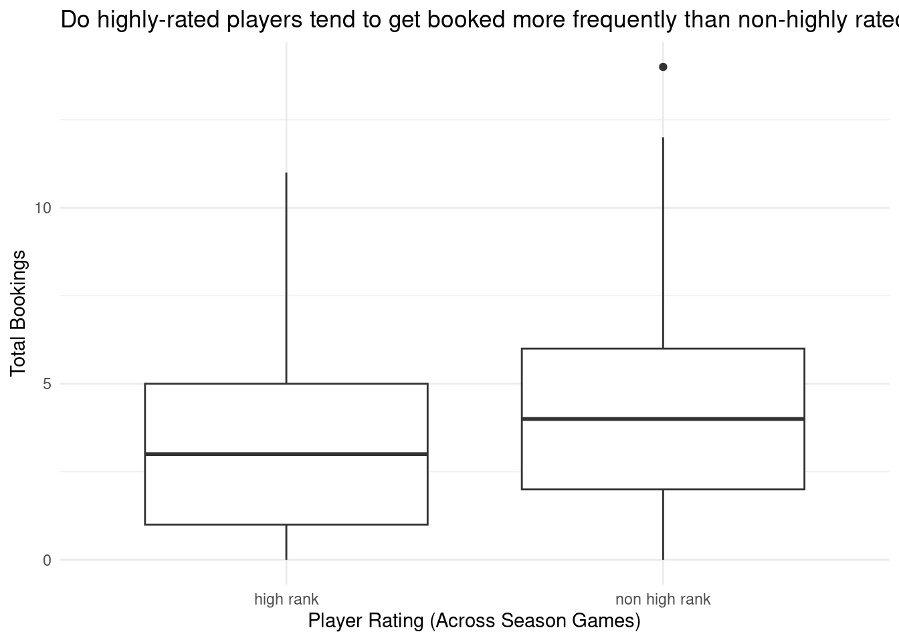
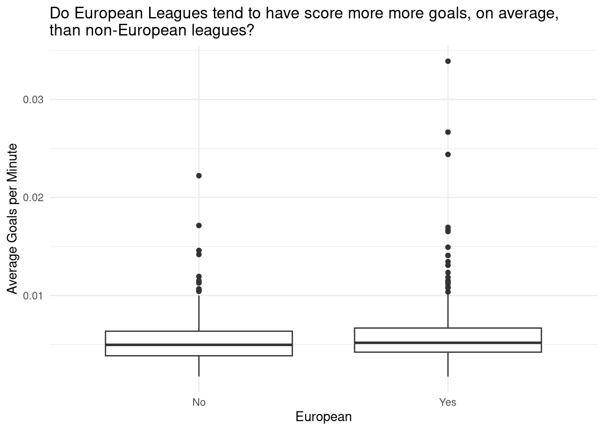
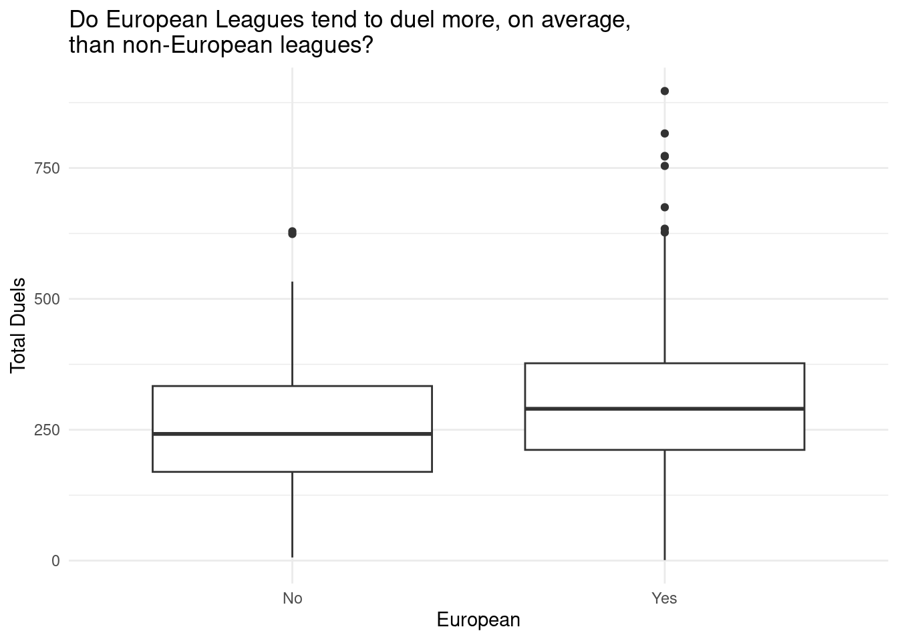

| Player Name | Player Age | Goals Scored |
|---|---|---|
| Son Heung-Min | 31 | 23 |
| Mohamed Salah | 31 | 23 |
| Cristiano Ronaldo | 38 | 18 |
| H. Kane | 30 | 17 |
| S. Mané | 31 | 16 |
Soccer Statistics Across Leagues
Topic and Motivation
Topic: Analyze offensive stats for soccer players in various leagues during 2021 season.
Motivation: Find relationships between soccer players, leagues, and their stats.
Research Questions:
- What factors influence booking frequency of players?
- Does aggressiveness differ between European and non-European leagues?
Data Introduction
Dataset contains the top 20 scorers from the top 27 football leagues for the 2021 league season.
Rows: Individual Players
Columns: Attributes (Ex: Bookings, Height, Rating, League)
The data is used by football fans, sports bettors, and researchers
Highlights from EDA Pt. 1

Analysis Pt. 1
# A tibble: 5 × 5
term estimate std.error statistic p.value
<chr> <dbl> <dbl> <dbl> <dbl>
1 (Intercept) 9.18 5.62 1.63 0.103
2 player_height_cm 0.0344 0.0299 1.15 0.251
3 player_weight_lb -0.0168 0.0128 -1.31 0.190
4 player_age -0.0235 0.0336 -0.698 0.485
5 games_rating -1.13 0.524 -2.15 0.0321Used two-sided hypothesis test to determine whether or not the difference in true population means of highly rated players and non-highly rated players is significant
\(H_0 = \mu_{high} - \mu_{non-high} = 0\)
\(H_A = \mu_{high} - \mu_{non-high} \not= 0\)
Reject the null hypothesis (p-value = 0.02)
Conclusions Pt.1
Found that player rankings influence the bookings of players
- We are 95% confident that the difference between the true population means of bookings for non-highly ranked and highly ranked players is between 0.14 and 1.2 (i.e. positive), implying that non-highly ranked players are booked more than highly ranked players, on average
Highlights from EDA Pt. 2

Warning: Removed 122 rows containing non-finite values (`stat_boxplot()`).`geom_smooth()` using formula = 'y ~ x'Warning: Removed 122 rows containing non-finite values (`stat_smooth()`).
Analysis Pt. 2
# A tibble: 5 × 5
term estimate std.error statistic p.value
<chr> <dbl> <dbl> <dbl> <dbl>
1 (Intercept) -1.98 0.489 -4.04 0.0000528
2 avg_penalty_by_game -2.76 1.51 -1.82 0.0686
3 avg_goals_per_min 305. 65.9 4.62 0.00000387
4 avg_shots_per_game -0.196 0.210 -0.932 0.351
5 duels_total 0.00564 0.00106 5.29 0.000000120Used two-sided hypothesis test to determine whether or not the difference in true population means of goals per minute/duels for European leagues and non-European leagues is significant
\(H_0 = \mu_{EU} - \mu_{non-EU} = 0\)
\(H_A = \mu_{EU} - \mu_{non-EU} \not= 0\)
Goals per minute: fail to reject the null hypothesis (p-value = 0.196)
Duels: reject the null hypothesis (p-value = 0)
Conclusion Pt. 2
Average goals per minute (a proxy for aggressiveness) does not differ between European and non-European leagues.
Total number of duels (a proxy for aggressiveness) differs between European and non-European leagues.
- We are 95% confident that the difference between the true population means of duels for European and non-European leagues is between 30.63766 and 86.54825 (i.e. positive), implying that European leagues duel more than non-European leagues, on average